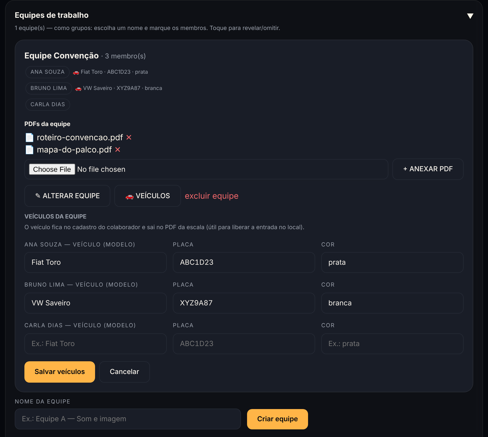

05 · Meu negócio
Gestão de pessoas
Cadastre quem trabalha com você, monte as equipes e guarde os documentos de cada uma.

Equipe com membros, veículos e PDFs — aberta em VEÍCULOS.
- 1Colaboradores: nome, função, telefone, e-mail, CPF e o veículo (modelo, placa e cor). Ou toque em Gerar link de cadastro e mande pelo WhatsApp — o cadastro chega para você aprovar.
- 2Equipes: crie como grupos (ex.: "Equipe Convenção") e marque os membros. Depois use ✎ ALTERAR EQUIPE para mudar o nome ou quem faz parte.
- 3🚗 VEÍCULOS modelo, placa e cor de cada membro de uma vez. Sai no PDF da escala e no dossiê do evento.
- 4PDFs da equipe: roteiro, mapa do palco, credenciais… escolha o arquivo e toque em + ANEXAR PDF. Fica numa pasta privada, só a sua conta abre.
Onde ficou o resto
Os eventos (com escala, comunicar equipe e presença) e os clientes ficam em Eventos — aqui aparecem só os "Próximos eventos das equipes", com atalho. Cachês e pagamentos ficam no Fluxo de caixa, aba Cachês e custos de evento.